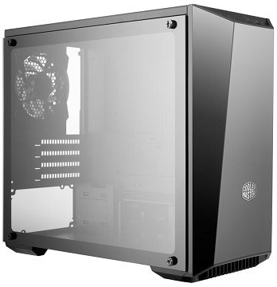

Корпус
Итак, прежде всего стоит сказать, что каких-то норм, канонов и идеалов в корпусостроении – нет. А посему не стоит «вестись» на яркие фразы – лучший, сверхсовременный и т.п., все это ересь. Если разбирать техническую сторону, то необходимо иметь в виду (держать в голове при покупке), что существуют следующие параметры:
- Тип корпуса (форм-фактор, размер);
- Материал;
- Система охлаждения (кулеры/вентиляторы);
- Конструктивные элементы, крепление;
- Внешний вид, дизайн, примочки.

Думаю, нет нужды говорить, что основной критерий выбора типа корпуса полностью зависит от тех задач, которые Вы ставите перед своим компьютерным собратом. Т.е. mini и micro ATX – это идеальные варианты для непритязательных офисных пользователей, для которых их железный друг должен просто хорошо вписываться в интерьер (не занимая много места), ну и по возможности выполнять «тяжелую» работу в виде «открыть-закрыть-сохранить» документ и прочие офисные забавы
Размер корпуса велик и позволяет установить любую плату и другие комплектующие без особых проблем и помех (видеокарты бывают крайне длинны, а число проводов при большом количестве комплектующих бывает существенной величиной, что мешает циркуляции воздуха в малом корпусе) Жесткие диски вынесены в отдельный блок и имеют собственные крепления (салазки без болтов для отвертки), а так же, что важней, вентиляторы для перпендикулярной и почти независимой системы охлаждения, а значит, толковой циркуляции воздуха В корпусе продумано почти всё, начиная от количества дополнительных болтиков на поперечной балке и заканчивая возможностью установки внутрь корпуса ИБП.